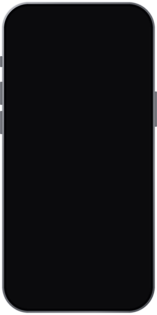

Изрежи и сподели момента.
Повече от гледане.Нова перспектива. Същият NOISY.

Мачът и всичко за него, както никога досега.

Какво се случи? Кой победи? Шоуто, за което всички говорят, събрано на пръв поглед.

Разбери кой е в любимата ти сцена.
Намери точния момент без лутане и без реклами, отбелязан предварително за теб.

12:40
Фермата· Еп. 27 · снощи
Моментите
Новините. Важното от деня, за 60 секунди.